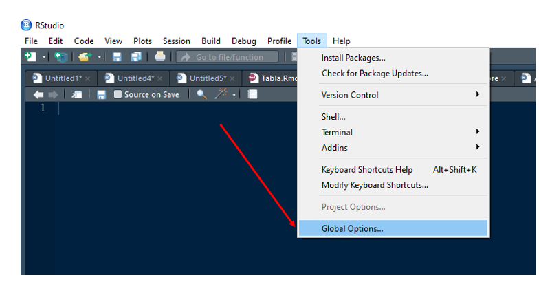
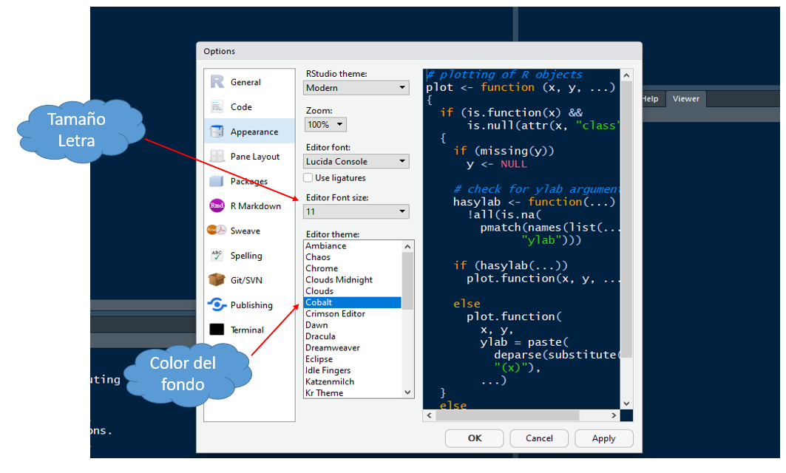

1.3 Personalizar Rstudio
Una vez hemos instalado de manera correcta R y Rstudio, el último paso a seguir es el de la personalización de Rstudio de acuerdo a cada una de nuestras necesidades o preferencias (este paso es opcional). Para ello, iniciamos Rstudio desde nuestro equipos y una vez abra, vamos a la pestaña Tools y damos clic en la opción Global Options (ver figura de abajo).
- Paso 1

- Paso 2
En la ventana emergente, como se ilustra en la figura de abajo y, entre otras opciones, podemos personalizar el tamaño de la letra a usar Rstudio así como el color de fondo del mismo. Yo, por ejemplo, uso el tamaño de letra asignado por defecto (11) y como color de fondo uso la opción Cobalt.
